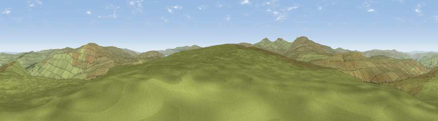

Viewpoint near Garrigill
#8526 in England · top 24% of its area beats it · near GarrigillWhere it is
The exact computed spot (NY 74475 36525). Click the marker for map links.
The view, rendered

A 360° render of this exact spot computed from the terrain model, tree cover and land cover — summer colours, afternoon light, calibrated against photographs of famous viewpoints. Real trees, hedges and buildings will differ in detail.
The panorama
Grey silhouette: terrain skyline in each direction (720 bearings, Earth curvature and refraction included). Dashed green: skyline with trees (+15 m) and buildings (+8 m) as obstacles. Blue strip: how far the ground is visible on each bearing.
Where the view opens
Wedge length = distance to the farthest visible ground on that bearing (vegetation-aware). Rings at 10, 25 and 50 km.
What fills the view
99% grassland ·
Angular shares of the visible panorama (visual magnitude), not map area. Landscape diversity 0.02 (0–1 Shannon).
Key numbers
More beautiful places nearby
The staircase of upgrades: each row has a higher view potential than everything closer. Driving times are estimates from straight-line distance, calibrated against real road routing — check an actual route before setting out.
| Place | Direction | Drive | Score |
|---|---|---|---|
| Noonstones Hill | NNE · 2 km | ~4 min | 66.3 |
| Burnhope Seat | ENE · 4 km | ~9 min | 67.3 |
| Fallow Hill | WSW · 4 km | ~10 min | 71.3 |
| Little Dun Fell | SW · 5 km | ~12 min | 78.4 |
| Cross Fell | WSW · 6 km | ~13 min | 78.7 |
| Viewpoint near Plumpton | W · 23 km | ~38 min | 78.9 |
| Barrock Fell | WNW · 30 km | ~47 min | 81.1 |
| Viewpoint near Watermillock | WSW · 32 km | ~50 min | 82.6 |
54.72306, -2.39781 · source: screening · position refined by local search. Computed location — check access rights before visiting.